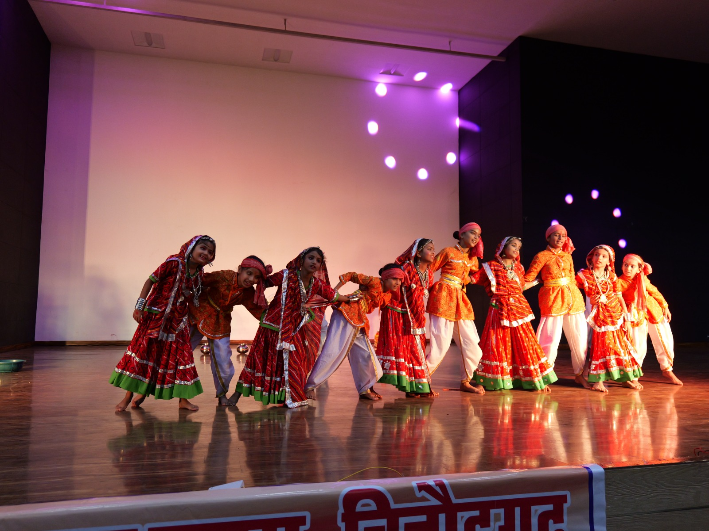

Home / About
Our Story
A small, warm, English medium school in Chittorgarh — built one nursery class, one festival, one graduation day at a time.
Since 2016
Lotus Academy runs classes from Nursery to Class 5, following the English medium RBSE curriculum. This year, the school completes ten years — a decade of first days, sports days, festivals and farewells shared with hundreds of families across Chittorgarh.
What has stayed constant through these ten years is the feeling every parent notices at the gate: this is a place where a young child is looked after the way a mother would — patiently, warmly, and with attention to who they are becoming, not just what they are learning.
A team of dedicated and passionate teachers works closely with every class, and the school calendar stays full through the year — Independence Day and Republic Day flag hoistings, Diwali and Dussehra, Navratri, Teacher's Day, Raksha Bandhan, Christmas, New Year, Summer Day, Rain Day, Holi and our Annual Function — so that learning always sits alongside culture, celebration and confidence-building.

Leadership
Principal, Lotus Academy · 20+ Years of Experience
With over twenty years in early-childhood and primary education, Principal Dimple Jat leads Lotus Academy with a philosophy simple enough for any parent to trust: a school should feel like a second home before it feels like anything else.
Under her guidance, the school's team of 10 teachers is trained to give each child individual attention — the same patience, warmth and encouragement a mother gives at home — while building the discipline and curiosity children need for the years ahead. It is this balance of care and structure that has carried Lotus Academy through ten years of steady growth.
In her own words
Dear Parents and Little Learners,
Every year, when I watch a new batch of children walk into Lotus Academy for their first day of school, I am reminded why we do this work. Some arrive holding their parent's hand a little too tightly, unsure of this new place — and by the time they walk across the stage on Graduation Day, they are singing, performing, and proudly showing off everything they have learned. That change is the real achievement of a school, more than any single mark or medal.
To our children: be curious, ask questions, and be proud of small progress — reading one more word, tying one more shoelace, making one more friend. Every big achievement in life is simply a collection of small, brave efforts like these.
To our parents: thank you for trusting us with your child's early years. I would only ask you to keep doing at home what we try to do at school — praise effort more than results, give your child time to be a child, and stay involved in the small moments, not just the big events. Come to our festivals, ask your child about their day, and let them see that home and school are working as one team for them.
Lotus Academy will keep celebrating every Diwali diya, every Republic Day flag, and every graduation cap with the same joy as our very first year — because that joy is exactly what we want your children to carry with them, long after they leave us.
With warmth,
Dimple Jat
Principal, Lotus Academy